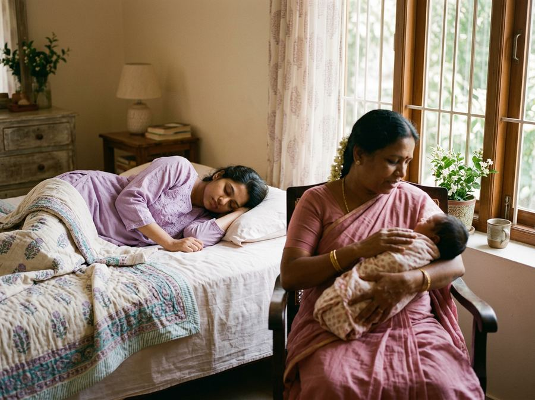
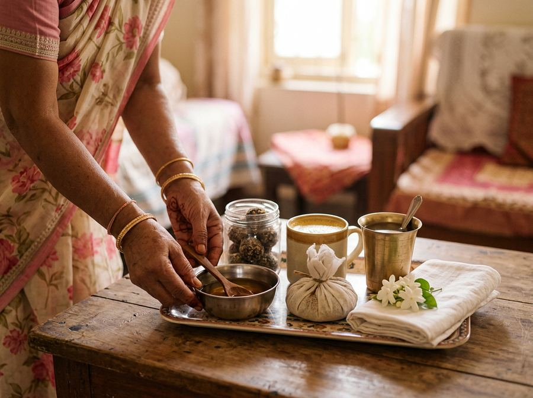
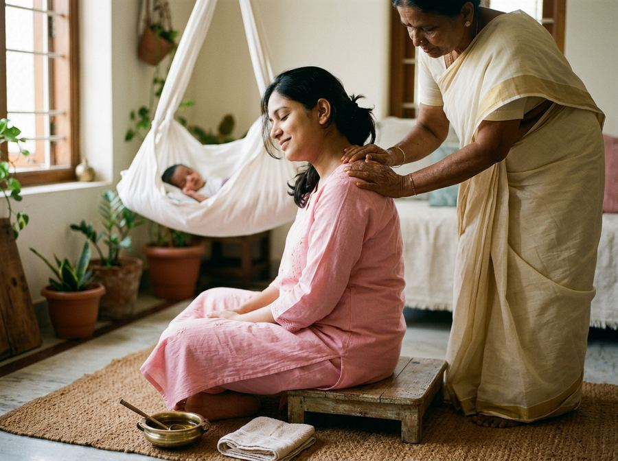
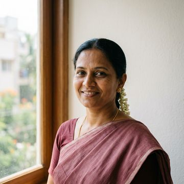

the forty days (n.) rest after birth, done the family way
A carer for you and your newborn, at home.
- Matched on language and tradition
- Cooks and massages like amma would
- A replacement by 7 am if she can’t come

How a japa is usually found, and what changes with Maike
- A number from an agent, forwarded on WhatsApp.Police check, two references called, 40 hours of training, three shadowed shifts.
- She doesn’t speak your language or know your food.Matched on the languages you speak at home and your tradition.
- She doesn’t come on day 12, and you start again.A replacement confirmed by 7 am.
- You meet her for the first time on the morning she starts.See her profile, references and a 20-second video intro, and choose her yourself.
Why we started this
A generation ago, you’d have gone to your maike for the forty days.
Your mother would have warmed the oil. Someone would have made the rasam, or the panjiri, or the katlu, the way it’s always been made. Today there’s a job you can’t leave, a flat in Koramangala far from her, and a japa from a WhatsApp forward who knows a tradition, just not yours. Maike brings your forty days to your home.
Your tradition, kept
Pick the home you grew up in. This is what she’ll do.
Every carer is trained in the forty days of her own tradition, and matched to yours. The foods, the massage, the bath, the days you’ll mark, done the way it’s done in many homes like yours. You tell her what your family does differently.

Families differ, and so do doctors. Your carer follows your home, and the nurse checks anything that touches health.
What she does, hour by hour
A day with your carer

What she does: newborn care, your recovery, feeding support, your meals, the log. What she doesn’t: household chores, cooking for the rest of the family, anything medical.
How it works
Three steps, and we stay
Tell us about your home
Where you live, the languages she should speak, the tradition you grew up in, who’s at home, when she should start.
Meet her before the baby comes
Two or three carers chosen for you. See every check we ran. Hear her introduce herself. Pick one, or ask for a video call.
We stay with you
If she can’t come, someone else is confirmed by 7 am. A nurse reads the daily log and answers you within 15 minutes. At week nine we ask whether she stays on as nanny.
Who your carer is
A person you choose, not a profile code
Her name, her languages, the tradition she’s trained in, who she’s cared for, and every check we ran. You choose. Nobody is assigned to you.

Lakshmi R.
9 years postpartum care · 27 families · 4.9
One package, paid once
The First Ten Weeks
or ₹15,000 × 6 months
The price covers her training, a replacement pool in your area, and the nurse who reads her log.
Add if you want
After the carer leaves
Maike Circle: your doctors and nurse on your phone, all year
A paediatrician, a gynaecologist, your nurse and specialists, the same team for the first year. ₹1,999 a month; the first month is free for First Ten Weeks families.
See Maike CircleThe honest comparison
Maike, or finding a japa yourself
| Japa via agency or a forward | Maike | |
|---|---|---|
| Cost, 10 weeks | ₹45,000–70,000, plus a month’s salary to the agency | ₹90,000, all in |
| Your tradition | Whatever she knows | Trained in yours; matched to you |
| Vetting | None, or a photocopy | Police check, references we call, 40-hr training |
| Doesn’t turn up | You start over | Someone else by 7 am |
| 3 a.m. question | A nurse, within 15 minutes | |
| Who knows how you’re doing | Nobody | Daily log, weekly summary to both of you |
Built for both of you
Your partner is on the same thread

The log, the weekly summary and the replacement notice go to both parents. The nurse’s suggestions for the father are written to him. Fathers co-decide in 92% of Indian homes; this is the first service that assumes it.
Why ten weeks, not forty days
The forty days end. The hard part doesn’t.
The traditions stop at six weeks, Kerala’s at ninety days. Paternity leave stops at two. The six-week check, the first vaccinations and the first growth worries all land in weeks six to ten, the weeks when help has usually left. We stay through them, and at week nine we ask whether she should stay on when you go back to work.
Stories from families
“Lakshmi akka made milagu rasam the way my amma does. I cried the first morning. By week three I was sleeping six hours.”
Anusha R., Indiranagar · first baby · 7 weeks postpartum
“My mother-in-law is Punjabi, I’m Kannadiga. Rekha made panjiri for her and ragi ganji for me, and nobody fought. That alone was worth it.”
Rohit & Priyanka, HSR Layout · second baby
“The night she couldn’t come, the replacement message reached me before I’d even noticed. Someone was at the door at 7.”
Meera S., Koramangala 5th Block · 4 weeks postpartum
Names changed; stories shared with permission.
Questions
Before you decide
Will she really know my family’s way?
She’s trained in the forty days of her own tradition and we match her to yours. Many homes do things slightly differently: a different laddoo, a different day for the first bath. You tell her, she follows your home. Anything that touches health, the nurse checks first.
What does the carer do, and not do?
She cares for the baby and for you: feeding support, bathing and massage, your recovery, your meals, and the daily log. She doesn’t do household chores, cook for the rest of the family, or give medical advice, the nurse and your doctor do that.
Can I choose her, or is someone assigned?
You choose, from two or three carers matched to your languages and tradition. You can ask for a video call or a home visit before deciding.
Does she stay overnight?
The standard package is 12 hours a day. Live-in is an add-on; she gets her own sleeping space and rest hours, which we set with you.
What if she doesn’t turn up?
She tells us by 9 pm, or we find out at 7 am. Either way a trained carer from your area, who speaks your language and has read your log, is confirmed to you by 7 am. Your original carer returns when she is well.
Is this medical care?
No. The carer and the care line give support and reassurance. Fever, bleeding, breathing trouble, feeding refusal or anything that worries the nurse goes straight to your paediatrician or obstetrician, and the nurse calls you rather than replying.
How early should I book?
Third trimester is ideal, so you can meet her first. If the baby is already here, we can usually start the next morning in Koramangala, Indiranagar, HSR, Jayanagar and the MG Road belt.
What does it cost, and what if I cancel?
₹90,000 for ten weeks, paid once, or six monthly payments of ₹15,000. Full refund before she starts. After that, unused weeks are refunded pro rata.
You shouldn’t have to do this alone. You don’t.
Five questions, ninety seconds, and you’ll meet her.
Prefer to talk? Leave your number on the form and we call back the same day. Bengaluru for now.